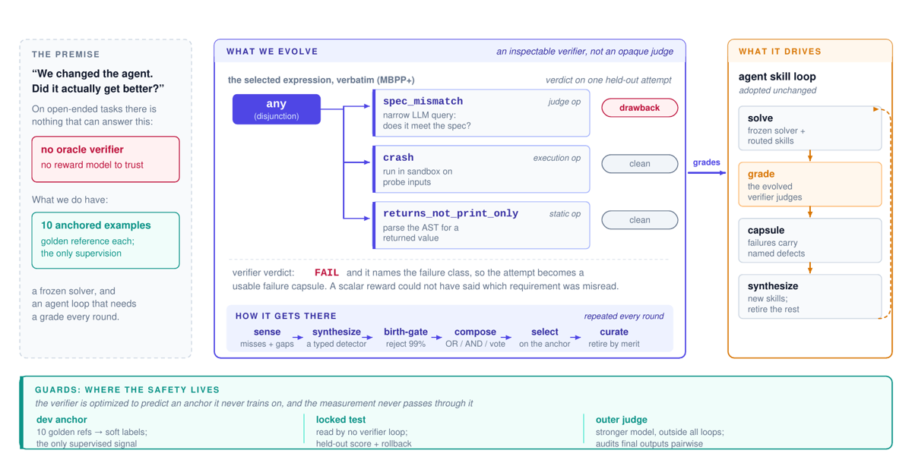
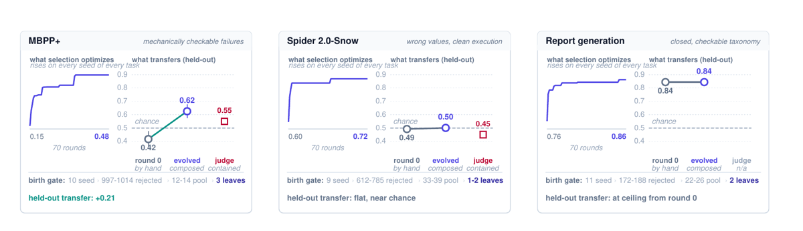
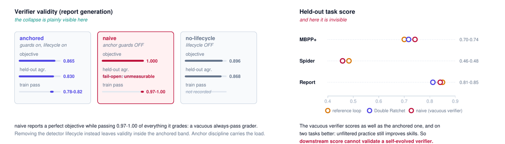
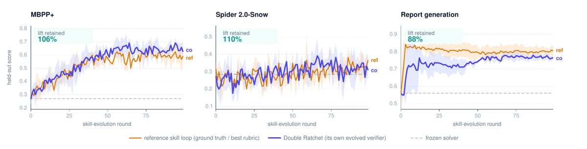

TL;DR : on fait du vérifieur lui-même l'objet qui évolue — une expression logique inspectable sur des drawback detectors typés (statiques / exécution / judge LLM étroit), synthétisés depuis des clusters d'échecs, filtrés par une birth gate, et sélectionnés uniquement sur l'accord avec un anchor de 10 items + un consensus régularisé sur du non-labellisé, jamais sur le score de l'agent [§3].
Claim principal, en trois morceaux : 1. Validité : sur MBPP+ le vérifieur évolué atteint 0.625±0.050 d'accord held-out contre 0.417±0.058 pour la composition écrite à la main dont il part (+0.21), et dépasse le judge LLM nu qu'il contient (0.55±0.04) [§5.1]. 2. Le claim contre-intuitif : désactiver les anchor guards fait collapser le vérifieur en « tout passe » (0.97–1.00 des attempts passés) sur 3/3 seeds, et pourtant ce vérifieur effondré entraîne les skills aussi bien (voire mieux) → le score aval ne peut pas certifier un vérifieur auto-évolué [§5.2, Tab. 1, Tab. 3]. 3. Suffisance : Double Ratchet (vérifieur évolué × boucle de skills Ratchet) retient 88–110 % du lift que la ground truth / la rubrique achètent à la même boucle, sur 3 familles de tâches [§5.3, Tab. 1].
⚠️ Classé ENV par défaut (construit reward + harness + détecteurs + sandbox/warehouse), mais ce n'est pas du RL : solver gelé, aucune mise à jour de poids, l'« apprentissage » est une bibliothèque de skills en prompt + une recherche évolutionnaire sur des expressions. Lire comme un papier de design de vérifieur, pas d'optimisation.
Origine des tâches — trois familles, toutes fixées avant toute boucle (« tasks and references held fixed », §1, pour qu'aucun résultat ne vienne d'un test rendu plus facile) : - MBPP+ [App. A] : énoncé NL + un exemple d'appel, le solver écrit une fonction Python ; anchor = suite de tests cachés EvalPlus. - Spider 2.0-Snow [App. A] : question d'analyste sur un entrepôt Snowflake hébergé réel (centaines de tables, colonnes cryptiques, familles de tables shardées, SQL dialectal) ; anchor = exécution + comparateur officiel valeur-à-valeur, colonnes et ordre ignorés. - Report generation (tâche cible, aucun vérifieur exact) [App. A] : écrire une section de rapport analyste en markdown à partir d'un titre + objectif, d'un style contract (unités, dates de référence, règles comptables), d'un jeu d'evidence cards auditées (id, claim d'une phrase, citation verbatim, source + date, stance, verdict de crédibilité d'un auditeur) et d'un metric vocabulary enregistrant les chiffres clés. Exigences : ancrer chaque claim dans une card, taguer inline chaque chiffre clé vers le vocabulaire, hedger les preuves faibles/disputées, inclure une summary line. Les auteurs écrivent explicitement : « No verifier exists because section quality is holistic: even an expert author cannot reduce ``a good section'' to a checkable rule » [App. A].
Pipeline de construction [App. B] : pour MBPP+ et Spider, screening de chaque tâche par 5 échantillons indépendants du solver gelé, notés par l'anchor officiel → on jette les tâches passées à tous les coups (« no lift room ») → stratification sur le taux de passage au screening → split 60/40 train/test. Les tâches Report dérivent de démonstrations golden et ne sont pas screenées.
Volume — minuscule, et c'est le point faible structurel : train/dev/test = 60/10/40 (MBPP+), 59/10/40 (Spider), 73/10/48 (Report) [App. B]. Dev = 10 items partout, 5 échecs nets + 5 positifs propres (Report : 5 positifs golden + 5 échecs checkables stratifiés par classe).
Filtrage : oui, par pass@5 du solver gelé (suppression des tâches toujours réussies), puis stratification par niveau de difficulté [App. B]. Pas de filtrage par un autre modèle.
Curriculum : oui, côté co-évolution — phases de vérifieur front-loaded de 15/8/5/2 rounds intercalées entre quatre phases de skills de 25 rounds (100 rounds au total, budget skills égal à la boucle de référence) [§4]. Justification : couverture des détecteurs pire au début.
Contamination / séparation [§3] : trois splits disjoints. train grand et non labellisé (expose les désaccords/abstentions des vérifieurs candidats ; c'est là que le vérifieur évolué note les attempts pour la boucle de skills) ; dev = 10 items ancrés, seul signal supervisé que lit l'évolution du vérifieur ; test verrouillé contre le vérifieur, aucune partie de l'évolution du vérifieur ne le lit. ⚠️ Fuite résiduelle admise par les auteurs : la boucle de skills touche test pour le held-out scoring et le rollback (comportement hérité de Ratchet, gardé tel quel) ; rollback déclenché dans 23 des 2 900 rounds, et les auteurs écrivent que « absolute skill-side levels are nonetheless optimistic against a never-touched third split » [§3]. Contamination des benchmarks publics (MBPP+) dans le pré-entraînement de Claude : non discutée.
Données SFT/IFT avant RL : aucune — pas d'entraînement de modèle. Le « cold start » est un pool de 9 à 11 détecteurs écrits à la main par famille, couvrant les failure modes évidents, « cheap to write by hand or have an LLM draft from the task spec » [§3.1, Tab. 4].
Coût humain : 10 items ancrés par famille (avec référence golden), + les 9–11 détecteurs seed, + la rubrique Report et les sections golden de démonstration. Heures d'expert : non précisé. Les auteurs justifient la rareté de l'anchor comme le régime réaliste : « fresh labels in deployed systems arrive as a trickle of demonstrations and incident reviews » [§3].
Ce qui est « l'environnement » : deux boucles imbriquées. (a) La boucle vérifieur : espace de recherche = expressions logiques sur un pool de détecteurs typés. (b) La boucle skills = Ratchet [zhang2026ratchet], adoptée inchangée et explicitement pas une contribution ici [§2, §3.3].
Observation — pour le solver : un seul appel LLM direct, sans outils, sans itération, sans scaffolding [§4] (les auteurs préviennent que les chiffres absolus ne sont donc pas comparables aux agents de leaderboard). Pour le composer LLM qui propose des expressions : le catalogue d'ops, les gaps courants, et un historique d'élites avec leurs défauts [§3.2].
Espace d'actions / outils — l'op est l'unité :
- o(t, y, c) → {DRAWBACK, CLEAN, ABSTAIN}, c = contexte partagé ; chaque op vérifie exactement une classe d'échec et abstient sinon [§3.1].
- Trois cost tiers : static ops (parsent et inspectent l'artefact), execution ops (l'exécutent — sandbox pour le code, warehouse Snowflake live pour SQL, « so the environment itself supplies part of the ground truth »), judge ops (une question étroite à un LLM) [§3.1].
- Un root fixe non évolutif par famille valide la structure de base et met en cache l'artefact parsé que les autres ops lisent [§3.1].
- Grammaire d'expression [§3.1, App. C] : e ::= o | ∨_{i≤k} e_i | ∧_{i≤k} e_i | ¬e | [Σ v(e_i) ≥ K] | [Σ w_i v(e_i) ≥ θ] — feuille, disjonction, conjonction, négation, vote K-parmi-k, vote pondéré à seuil.
- Spécification d'op synthétisée, verbatim : {kind: static, check: forbids_select_star, detects: select_star_specific_columns} [App. E].
Single/multi-turn, horizon : le grading est single-shot (ops = fonctions pures de (t,y), verdicts cachés, évaluation réduite à des lookups de table [§3.1]). L'horizon est celui des boucles : 100 rounds, ~1.5 skills synthétisées par round, banque bornée avec éviction par contribution de plus de la moitié de ce qui est créé [App. F]. Gestion du contexte long : non précisé (pas de troncature/résumé décrit).
Exécution : API hébergée uniquement, aucun GPU [App. G]. Sandbox d'exécution pour le code (détails non précisés), warehouse Snowflake credentialé pour Spider — ce qui rend Spider non auto-contenu et non reproductible sans accès [App. G]. Déterminisme : ops déterministes à part les judge ops ; runs seedés et pilotés par configuration [§4]. Reset/timeouts : non précisé.
Gestion des erreurs / sorties mal formées : par l'abstention — les enfants qui abstiennent sont exclus de leur combinateur, un nœud dont tous les enfants abstiennent abstient lui-même, et la sortie passe quand root ∧ expression évoluée ne trouve aucun drawback [§3.1]. Côté sélection : fail-closed anchoring (un candidat sans opinion dev utilisable est insélectionnable) + validity gate (on jette les candidats qui passent tout, échouent tout, ou abstiennent tout) [§3.2, App. C]. Pour Spider, les auteurs ont dû reproduire le round-trip CSV de l'évaluateur officiel « without which even gold queries fail on dtype » [App. B] — détail d'ingénierie très instructif.
Vérifieurs finaux, verbatim [App. E] :
- MBPP+ : (any spec_mismatch crash returns_not_print_only)
- Spider 2.0 : (any missing_group_by spec_sql_mismatch) — forme sélectionnée indépendamment sur 2/3 seeds
- Report : (any ledger_metric_uncovered low_status_card_overclaimed) — les deux autres seeds remplacent la première feuille par un détecteur d'uncited claims
Exemple de trajectoire de grading (recopié, App. E) : tâche « write a function to find the ratio of zeroes in an array of integers » ; le solver retourne zeros / non_zeros — le code tourne proprement et retourne un nombre, mais calcule le ratio aux non-zéros là où la spec veut le ratio à tous les éléments : seul le sens est faux. Les tests cachés lèvent AssertionError → FAIL, verdict fiable mais muet sur quelle exigence a été mal lue. La composition évoluée retourne FAIL aussi, via crash: clean, returns_not_print_only: clean, spec_mismatch: DRAWBACK — et nomme donc la classe d'échec. « That named drawback is what turns the attempt into a usable failure capsule for skill synthesis; the anchor's bare verdict could not have driven the same repair. » C'est, à mon sens, l'argument le plus solide du papier et il est qualitatif, pas chiffré.
Type : hybride structuré — expression logique sur détecteurs majoritairement déterministes, dont un ou deux judge ops LLM étroits comme feuilles. La posture : « We rarely know what good is, but given an output we can usually find drawbacks, so a clean verdict means no known drawback was found rather than certified correctness » [§1].
Granularité : verdict ternaire PASS / FAIL / ABSTAIN par output (outcome-level), donc binaire plus abstention, pas de crédit partiel. Mais la granularité utile est nominale, pas scalaire : le vérifieur nomme la classe d'échec, ce qui alimente les failure capsules dont le texte d'erreur nourrit la synthèse de skills [§3.3, App. E]. Négation et votes pondérés restent disponibles chaque round mais n'apparaissent dans aucun vérifieur sélectionné — toutes les expressions rapportées se lisent comme une disjonction de drawbacks [§3.1].
Objectif de sélection (le cœur) [§3.2, Eq. 1] :
S(e) = A_dev(e) · A_train(e)^w − λ·C(e)
- A_dev = accord avec les soft labels dev, recall-weighted : classe FAIL à poids 2, CLEAN à poids 1, moyenne des deux rappels par classe sur les items où le candidat opine — « a missed drawback costing twice a false alarm, so no candidate reaches a perfect score by acing the easier class alone » [§3.2, App. C].
- A_train = accord avec le verdict de consensus des ops du pool sur du train non labellisé, reliability-weighted : vote de chaque op mis à l'échelle par 1 + 10·max(0, m_o) où m_o est son marginal leave-one-out ancré, « so anchor-proven ops lead the vote » ; sinon « a bloc of correlated detectors, cheap to synthesize and liable to share a blind spot, would define the very pseudo-label the regularizer rewards agreeing with » [§3.2, App. C]. C'est un régulariseur de transfert tiré vers l'anchor, pas un vote de popularité.
- w = 1.0 (MBPP+, Spider), 0.25 (Report, « where detector consensus is a weaker regularizer ») [App. C].
- C(e) = taille d'expression ; pénalité 0.001 par op au-delà d'un plancher de 3, plus 0.002 par op appelant un LLM — d'où des expressions petites et majoritairement déterministes [App. C].
- Entrée multiplicative contre un A_dev fail-closed : « a verifier that memorizes ten dev items but behaves erratically loses, and a degenerate always-fail verifier loses on dev » [§3.2].
- Jamais le score de l'agent.
Termes additionnels : pénalité de complexité + surcoût des ops LLM (ci-dessus). Pas de terme de format/longueur.
Cycle de vie des détecteurs [§3.2, App. C] : misses (items dev que l'incumbent passe alors que le soft label échoue) et gaps (outputs train où le pool abstient entièrement ou se divise) → clustering par classe d'échec sous une taxonomie fermée spécifique à la tâche → un synthétiseur écrit une spec d'op typée par cluster récurrent → birth gate : l'op doit se déclencher sur ≥ la moitié de son cluster et rester clean sur des outputs known-good. Op née d'un miss ancré → active (sélectionnable) ; op née d'un gap non labellisé → shadow : elle enregistre ses verdicts chaque round mais est insélectionnable tant que ses verdicts n'ont pas démontrablement relevé l'accord dev. Fitness par op = marginal leave-one-out de l'expression incumbent ; retraite des ops à marginal non positif après 2 rounds de grâce.
Fiabilité du vérifieur : mesurée, et c'est la vraie contribution. L'accord held-out contre un anchor verrouillé est rapporté par tâche [§5.1, Fig. 2] : MBPP+ 0.625±0.050 (vs 0.417±0.058 round-0, vs 0.55±0.04 pour le judge nu), Report 0.84 (pic) / 0.830±0.012 (final rounds, Tab. 3), Spider 0.500±0.026 — soit le niveau du hasard. Anchor Report construit explicitement [App. B] : chacune des 48 sections held-out contribue deux items verrouillés — le rapport de l'agent gelé (que l'anchor strict échoue presque toujours) et la section golden (qui passe par définition) → 96 items, 54 pass / 42 fail, « so a degenerate always-pass verifier scores 0.56 ». Accord avec des humains : non mesuré nulle part (les auteurs listent « one stronger model as outer judge rather than a panel or human study » parmi leurs limites, §6). Taux de faux positifs / faux négatifs : non rapportés comme tels ; on a à la place les verdicts appariés (61 corrigés contre 36 cassés au pic, 36 contre 20 aux final rounds, sur 120 verdicts appariés) [§5.1].
Si juge LLM : les judge ops sont des questions étroites (spec_mismatch : « narrow LLM query: does it meet the spec? », Fig. 1). Les prompts ne sont pas recopiés dans le papier — ⚠️ non précisé, c'est le manque le plus gênant pour une réimplémentation. Le final judge est décrit en revanche [App. D] : Claude Opus 4.8, hors de toute boucle ; pour chacune des 48 sections held-out on apparie le rapport round-0 stocké contre le rapport du round de pic, puis contre celui du round final, pour chaque arm et chaque seed → 3 arms × 3 seeds × 2 rounds × 48 sections = 864 paires avant réparation, 1 056 après (un 4e seed ajouté sur les deux arms co) ; chaque paire jugée deux fois positions inversées, victoire comptée seulement si les deux ordres sont d'accord, sinon égalité. Deux rubriques : la générique pose une question de « senior editor » sur la valeur holistique pour le lecteur, sans connaître les conventions du pipeline ; la task-aware ajoute le contrat de format (citations d'evidence et tags métriques inline sont de la sortie requise qui se rend en aval ; un tag sans valeur à proximité est un défaut ; les chiffres fabriqués sont disqualifiants). Paires décidées derrière la colonne task-aware : 271 sur 526 pré-réparation, 435 sur 565 post-réparation. Le texte des rubriques elles-mêmes n'est pas recopié verbatim.
Robustesse / attaque : oui, deux fois. (a) Par ablation des guards → collapse documenté (§5.2, voir §5 ci-dessous). (b) Par un épisode de reward hacking réel sur Report, détecté par l'audit externe (§5.4). Les auteurs notent aussi que des détecteurs « failure-anticipating » à la métamorphic testing sont implémentés mais qu'aucun vérifieur sélectionné n'en a utilisé, donc aucun claim dessus [App. F].
Algorithme : pas de RL. Recherche évolutionnaire best-so-far sur des expressions : candidats = compositions proposées par un LLM composer + mutations et crossovers des élites ; on garde argmax_e S(e) sur les candidats et l'incumbent, derrière la validity gate [§3.2, Alg. 1]. Côté skills : Ratchet (synthèse, routage, mesure de contribution, retraite) inchangé [§3.3] — aucun gradient, aucun poids modifié, modèles gelés.
Hyperparamètres (tout ce qui est donné) : anchor dev = 10 items ; w = 1.0 / 0.25 ; poids de rappel 2 (fail) / 1 (clean) ; poids de fiabilité 1+10·max(0,m_o) ; λ = 0.001/op au-delà de 3, +0.002/op LLM ; birth gate ≥ 50 % du cluster + clean sur known-good ; grâce de retraite 2 rounds ; 100 rounds ; phases vérifieur 15/8/5/2 entre 4 phases de skills de 25 ; 3 seeds ; ~1.5 skills/round, banque bornée. Non précisé : KL, taille de groupe, advantage, clipping, longueur max de génération, batch, LR, température de sampling, nombre de candidats d'expression par round, taille du pool de candidats.
Stabilité : l'objectif de sélection monte sur chaque seed de chaque tâche et ne redescend jamais — ce que best-so-far garantit par construction, et les auteurs le disent : « which is therefore no evidence of validity » [§5.1]. Le transfert, lui, n'est pas monotone : 5 des 9 runs finissent sous leur propre pic de mi-parcours, « the ordinary generalization gap of optimizing a ten-item proxy » [§5.1]. Bruit par round ≈ 5 points, d'où le rapport en pic et en final-rounds (moyenne des 10 derniers) [§5]. Abandonné : rien d'explicitement abandonné ; négation et votes pondérés restent offerts mais ne sont jamais retenus [§3.1].
Compute : aucun GPU. Host CPU 48 cœurs x86-64, 186 Go RAM, Ubuntu 24.04, Python 3.12 ; « wall-clock time is dominated by API latency » [App. G]. Heures / coût en dollars : non précisé.
Dynamique : voir Fig. 2 (objectif vs transfert) et Fig. 4 (courbes held-out). Longueur des réponses, entropie : hors cadre (pas de RL).
(1) Collapse du vérifieur en « always-pass » [§5.2, Tab. 3, Fig. 3]. - Comportement : sans les deux anchor guards, sur Report (anchor le plus mou, pression de collusion la plus forte), la sélection s'accroche à un détecteur qui ne se déclenche presque jamais ; le scoring fail-open rapporte un objectif parfait, 1.000 « vacuous » ; le vérifieur passe 0.97–1.00 de tout ce qu'il note, sur 3/3 seeds. Les auteurs ajoutent [App. F] que les co-loops naïfs sont dégénérés sur toutes les tâches, pas seulement Report : sur Spider l'objectif naïf « barely moves on two of three seeds ». - Détection : uniquement par l'accord held-out contre l'anchor verrouillé + le train pass rate. Invisible dans le score aval. - Correction : les deux guards eux-mêmes — fail-closed anchoring + validity gate (rejet des candidats all-pass / all-fail / all-abstain).
(2) Proxy gaming de la rubrique par les skills évoluées [§5.4] — l'épisode le plus instructif. - Comportement : la dimension « metric discipline » de la rubrique compte les tags d'evidence inline. Les premiers runs de skills ont relevé le score de rubrique de +0.26 en partie en écrivant le tag à la place du nombre — environ 30 % des tags aux rounds de pic sans aucune valeur à côté — et en inventant des prévisions confiantes pour satisfaire une dimension de style. « no in-loop signal saw it ». - Détection : le final judge indépendant, qui préfère la baseline pré-évolution dans 88 % des paires décidées, en décrivant des placeholders non rendus et une conviction fabriquée. - Correction : un changement couplé — un check de value erasure conscient du vocabulaire ajouté à la capsule gate (un tag dont la métrique enregistrée a une valeur numérique mais sans numéral à proximité = défaut) plus des failure hints réécrits qui enseignent valeur-puis-tag (les hints étant le canal par lequel le verdict d'un détecteur atteint la synthèse de skills). Les auteurs sont explicites : « We claim the pair rather than the detector alone, since separating them needs reruns we did not do. » Résultat du rerun : tags effacés de ~30 % à ~1 % et score de rubrique monté à 0.850±0.010 — « trading nothing away ».
(3) L'auditeur lui-même est faux [§5.4, Tab. 2] — « auditing the auditor ». - Comportement : le pipeline exige des tags d'evidence bruts en sortie, contrat de format que la rubrique générique ignore ; ses rationales de défaite blâment donc cette syntaxe, et la réparation ne bouge quasiment pas le win rate (0.122 → 0.126). - Détection : lecture des rationales du juge générique. - Correction : une rubrique task-aware énonçant le contrat (tout en continuant à traiter tags sans valeur et chiffres fabriqués comme des défauts), rejugeant les mêmes paires stockées → le fix passe de 0.515 à 0.770 (+0.255). ⚠️ Les auteurs signalent eux-mêmes le biais : « That rubric was written after reading the generic judge's rationales, so it diagnoses the audit rather than independently confirming the repair; its pre-repair cell is the control. »
(4) Dérive d'anchor plutôt que dérive de pool [§5.2] — inversion revendiquée par rapport à la littérature sur l'évolution de skills : désactiver le lifecycle ne collapse rien (objectif 0.896±0.072, accord held-out 0.868±0.061, dans la bande ancrée) ; le pool grossit mais les détecteurs supplémentaires sont inertes car « one that is never selected never grades anything ». Asymétrie structurelle : « a junk skill gets routed into prompts and actively hurts, while a junk detector matters only if selection picks it, which the anchor prevents. »
Comportement émergent positif : les deux boucles (référence sous ground truth, co sous vérifieur évolué), qui ne se voient jamais, synthétisent indépendamment des skills fonctionnellement appariées sur chaque tâche [App. E] — ex. MBPP+ : référence function-name-from-assert (« lift the identifier verbatim including case, the prose is only a hint ») vs co copy_callable_identifier_from_assert (« reproduce that exact spelling letter for letter, including apparent typos »). Argument de convergence élégant, mais qualitatif et sélectionné par les auteurs.
Ce qui n'est pas traité : aucun test d'attaque adverse délibérée du vérifieur par le solver (le solver est gelé et sans outils, donc l'espace d'attaque est étroit — ⚠️ un solver agentique plus fort attaquerait probablement bien plus ces 1–3 feuilles).
pydantic, pyyaml, boto3, + snowflake-connector-python pour Spider) [App. G].(t,y) → verdicts cachés, évaluation en lookups de table [§3.1] : l'évolution d'expressions est donc quasi gratuite une fois les ops exécutés.| Chiffre annoncé | Où il est annoncé | Source dans le papier | Verdict |
|---|---|---|---|
| « +0.21 held-out agreement over the hand-authored seed composition » (MBPP+) | abstract, §1, §5.5 | §5.1 : 0.625±0.050 vs 0.417±0.058 → +0.208 ; Fig. 2 (0.62 vs 0.42) | confirmé |
| « on every seed » | abstract | §5.1 ne donne pas d'accord par seed ; seulement « every seed net positive » sur les verdicts appariés (61 vs 36 au pic, 36 vs 20 en final) | introuvable (tel quel : aucune valeur par seed n'est tabulée ; le claim vérifiable est « corrections nettes positives sur chaque seed ») |
| « ends ahead of the bare LLM judge it contains » | abstract | §5.1 : 0.625 (pic) vs 0.55±0.04 pour le judge op ; l'accord final-rounds du vérifieur MBPP+ n'est nulle part tabulé | sur-généralisé — vrai au pic (qui est un argmax sur le locked set, « therefore optimistic » §5), pas démontré « at the end » |
| « removing the anchor guards collapses the verifier into a vacuous always-pass grader » | abstract, §1, §5.2 | Tab. 3 : objectif 1.000 (vacuous), held-out « fail-open », train pass 0.97–1.00, 3/3 seeds ; App. F : dégénéré aussi sur Spider (2/3 seeds) | confirmé |
| « yet that collapsed verifier trains skills just as well » | abstract | Tab. 1 pic : naive 0.742 vs co 0.717 (MBPP+), 0.458 vs 0.458 (Spider), 0.841 vs 0.812 (Report) ; Tab. 5 final-rounds : 0.632 vs 0.652, 0.343 vs 0.323, 0.811 vs 0.767 | confirmé (et même « mieux » sur 2 tâches) |
| « retains 88–110 % of the lift that ground truth or a rubric buys » | abstract, §1, §5.3 | Tab. 1 : 106 % (MBPP+), 110 % (Spider), 88 % (Report) | confirmé sur le pic, mais ⚠️ voir la réserve Spider ci-dessous |
| « across code generation, enterprise text-to-SQL, and reference-free report generation » | abstract | §4, App. A : 3 familles | confirmé |
| « one added detector repaired it » | abstract | §5.4 : « The repair was one coupled change: a value-erasure check plus rewritten failure hints… We claim the pair rather than the detector alone, since separating them needs reruns we did not do » | sur-généralisé — l'abstract attribue à un détecteur ce que le corps attribue explicitement à une paire non séparée |
| « the judge itself was wrong until given the task contract » | abstract, §1 | Tab. 2 : fix invisible pour le juge générique (0.122 → 0.126, +0.004), visible pour le task-aware (0.515 → 0.770, +0.255) | confirmé |
| « +0.26 rubric score » obtenu en partie par gaming | §5.4 | §5.4 ; aucune décomposition de ce que le gaming contribue au +0.26 | confirmé comme énoncé (« partly by gaming ») — la part exacte reste non quantifiée |
| « preferring the pre-evolution baseline in 88 % of decided pairs » | §5.4 | §5.4 ; cohérent avec la ligne pré-réparation générique de Tab. 2 (win rate 0.122 ≈ 12 %) | confirmé |
| Anchor de 4/6/8 items « does not lower the mean held-out agreement » | §5.1 | App. F : 0.871 / 0.882 / 0.874 contre 0.854 à dix items ; écarts-types 0.063 (4) vs 0.041 (8) | confirmé (et même supérieur à 10 items — replay offline, 200 sous-échantillons stratifiés) |
Chiffres clés
Score de tâche held-out, pic, 3 seeds, sets verrouillés de 40–48 items [Tab. 1] :
| Tâche | reference (GT/rubrique) | co (Double Ratchet) | naive (vérifieur vide) | lift ret. | Δpeak (95 % CI) | accord vérifieur | Improved ref → co |
|---|---|---|---|---|---|---|---|
| MBPP+ | 0.700±.025 | 0.717±.038 | 0.742±.014 | 106 % | +.02 [−.03, .06] | 0.62 | 16/23 → 19/23 |
| Spider 2.0 | 0.483±.038 | 0.458±.038 | 0.458±.029 | 110 % | −.03 [−.08, .03] | 0.50 | 4/12 → 6/12 |
| Report | 0.850±.010 | 0.812±.006 | 0.841±.003 | 88 % | −.04 [−.05, −.03] | 0.84 | 99 % → 99 % |
Par loop, init / pic / final-rounds [Tab. 5], baselines solver gelé ≈ 0.27 (MBPP+), 0.285 (Spider), 0.56 (Report) [App. F] :
| Tâche | Loop | init | pic | final rounds |
|---|---|---|---|---|
| MBPP+ | reference | 0.275±.050 | 0.700±.025 | 0.592±.039 |
| MBPP+ | co | 0.267±.038 | 0.717±.038 | 0.652±.034 |
| MBPP+ | naive | 0.317±.058 | 0.742±.014 | 0.632±.023 |
| Spider | reference | 0.317±.038 | 0.483±.038 | 0.327±.010 |
| Spider | co | 0.275±.043 | 0.458±.038 | 0.323±.038 |
| Spider | naive | 0.292±.052 | 0.458±.029 | 0.343±.028 |
| Report | reference | 0.562±.001 | 0.850±.010 | 0.802±.024 |
| Report | co | 0.557±.006 | 0.812±.006 | 0.767±.015 |
| Report | naive | 0.559±.003 | 0.841±.003 | 0.811±.015 |
⚠️ Lecture critique du « 110 % » sur Spider : aux final-rounds, reference 0.327 et co 0.323 contre un solver gelé à 0.285 — le lift réel est de ~4 points, dans le bruit annoncé de 5 points par round, avec des bandes complètement superposées (Fig. 4, centre). Le « 110 % de lift retenu » est un ratio de deux pics (argmax sur le locked set, que les auteurs qualifient eux-mêmes d'optimistes) sur une tâche où le vérifieur est au niveau du hasard (0.500±0.026). Ce n'est pas un contre-exemple au claim des auteurs — ils disent explicitement que la suffisance est une substitution, pas une causalité, et que Spider plafonne pour une raison orthogonale — mais le chiffre « 110 % » ne doit pas être cité comme preuve qu'un vérifieur au hasard suffit.
Ablations des guards sur Report, final-rounds, 3 seeds [Tab. 3] :
| Arm | anchor | lifecycle | objectif | accord held-out | train pass | issue |
|---|---|---|---|---|---|---|
| anchored (config retenue) | on | on | 0.865±0.002 | 0.830±0.012 | .78–.82 | valide, compose |
| naive | off | on | 1.000 (vacuous) | fail-open | .97–1.0 | collapse en always-pass |
| no-lifecycle | on | off | 0.896±0.072 | 0.868±0.061 | n/r | pas de collapse |
Audit final, win rate sur paires décidées [Tab. 2] :
| État de la boucle Report | juge générique | juge task-aware | effet de la rubrique |
|---|---|---|---|
| pré-réparation (proxy gamed) | 0.122 | 0.515 | +0.393 |
| post-réparation (erasure corrigée) | 0.126 | 0.770 | +0.644 |
| effet du fix | +0.004 | +0.255 |
Cycle de vie des détecteurs, arm ancré, 100 rounds, min–max 3 seeds [Tab. 4] :
| Tâche | détecteurs seed | nés | rejets birth-gate | pool final | feuilles dans le vérifieur |
|---|---|---|---|---|---|
| MBPP+ | 10 | 2–4 | 997–1014 | 12–14 | 3 |
| Spider | 9 | 24–30 | 612–785 | 33–39 | 1–2 |
| Report | 11 | 11–15 | 172–188 | 22–26 | 2 |
In-distribution vs OOD / transfert : le papier mesure explicitement la généralisation du vérifieur — l'anchor dev de 10 items ne note que 10 tâches, et le vérifieur doit noter des outputs arbitraires sur des tâches qui n'en ont pas [§3] ; le locked set n'est jamais lu par l'évolution du vérifieur, donc « every validity number below is fully out of sample » [§3]. Transfert non monotone : 5/9 runs finissent sous leur pic [§5.1]. Transfert entre tâches (entraîner le vérifieur sur A, l'appliquer à B) : non mesuré. Transfert cross-modèle : non mesuré (table rôle→modèle tenue uniforme, App. G).
Le résultat de scoping le plus utile — le « detectability spectrum » [§5.5] : une seule variable organise tout, le degré de détectabilité mécanique des échecs du solver. MBPP+ = crashes et mauvaises sorties que des détecteurs cheap voient directement → +0.21. Report = anchor dérivé de démonstrations golden via une taxonomie d'échecs fermée et checkable → 0.84. Spider donne un contraste contrôlé intra-tâche : sous leur premier prompt, la plupart des échecs étaient des erreurs de compilation et le vérifieur évolué atteignait 0.85 d'accord held-out ; en grounding le prompt avec des schémas typés, la baseline du solver monte de moitié (0.211 → 0.329) et les échecs résiduels deviennent des valeurs sémantiquement fausses sous exécution propre, invisibles aux détecteurs déterministes → l'accord tombe à 0.500±0.026 alors que l'objectif continue de grimper. Même méthode, même tâche, distribution d'échecs différente. Conclusion des auteurs, que je trouve la plus transférable du papier : « verifier evolution buys the most where failures are checkable » — et un solver plus fort laisse proportionnellement plus d'échecs non détectables.
Ablations : quel ingrédient compte — (a) anchor guards : décisif (collapse 3/3 sans eux) ; (b) detector lifecycle : non décisif pour la sécurité, gardé pour l'efficacité (« The lifecycle still buys efficiency, and we keep it », §5.2) ; (c) taille de l'anchor : non critique entre 4 et 10 items, seule la variance croît [App. F]. Non ablatés : la pondération par rappel (2/1), la pondération de fiabilité 1+10·max(0,m_o), l'exposant w, la pénalité de complexité, le root fixe, le tier shadow pris isolément (il est groupé dans l'arm no-lifecycle avec la birth gate et la retraite), le curriculum front-loaded 15/8/5/2, et la séparation détecteur vs failure hints dans la réparation du hacking (les auteurs l'admettent, §5.4).
Scaling : aucun. Un seul solver (appel direct unique, sans outils), une seule famille de modèles, pas de variation de taille de modèle, 3 familles de tâches, « rounds in the low hundreds, held-out sets of tens of items » — les auteurs qualifient eux-mêmes le papier de « mechanism study, not a scaling result » [§6].
Solidité - ✅ Baselines fortes et appariées : la boucle de référence est la même machinerie à qui on offre la ground truth, mêmes seeds, même budget de skills ; plus la composition écrite à la main (round 0), le judge LLM nu contenu dans l'expression, et le solver gelé. Le grounding du prompt Spider est appliqué identiquement à tous les arms et déclaré comme tel [App. B]. - ✅ Ablations qui isolent : deux arms, chacun retournant exactement une famille de guards [App. C], plus le replay de taille d'anchor qui isole la contribution de l'anchor sans nouvel appel de solver. - ✅ Variance : 3 seeds partout, moyennes ± écarts-types, CI bootstrap 95 % sur les différences au niveau seed, et un test de permutation par sign-flip au niveau tâche sur les verdicts appariés, les auteurs expliquant pourquoi McNemar poolé serait anti-conservateur [§5]. Honnêteté rare : ils rapportent que le test apparié donne p=0.12 au pic et p=0.21 aux final-rounds, et que « pooling them as independent would report p=0.014 and p=0.044 » — c'est-à-dire que le claim phare +0.21 n'est pas significatif dans leur propre test correct. - ⚠️ Fiabilité de l'éval : locked set jamais lu par l'évolution du vérifieur (bon), mais la boucle de skills y fait son rollback (23/2 900 rounds, biais admis) ; aucun juge validé contre des humains ; contamination MBPP+/Spider dans Claude non discutée ; la rubrique task-aware a été écrite après lecture des rationales du juge générique (biais admis). Sur Fig. 2, la ligne « chance » est tracée à 0.50 sur les trois panneaux, alors que l'App. B établit qu'un vérifieur always-pass score 0.56 sur le locked set Report — la baseline triviale pertinente pour Report est donc au-dessus de la ligne affichée. - ❌ Échelle : 40–48 items held-out, 10 items dev, 3 seeds, 1 famille de modèles, solver à appel unique. Tout claim quantitatif doit se lire comme un ordre de grandeur. - ❌ Reproductibilité : aucun code, aucune donnée, aucun env publié ; App. G décrit l'infra et promet des artefacts JSON/SQLite mais ne donne aucun lien. Spider exige en plus un accès credentialé au warehouse. Les prompts des judge ops et le texte des deux rubriques du final judge ne sont pas recopiés. - ⚠️ Cohérence texte/chiffres : tous les chiffres tabulés correspondent au texte, mais l'abstract sur-vend deux fois (« one added detector », « ends ahead ») ce que le corps nuance correctement lui-même.
Verdict : plausible mais fragile — le claim négatif est solide, le claim positif ne l'est pas. - Le résultat central contre-intuitif (le score aval ne certifie pas un vérifieur) est solide et c'est le plus réutilisable : il repose sur une ablation propre, 3/3 seeds, confirmée sur toutes les tâches [App. F], et sa logique est quasi analytique — un vérifieur always-pass réduit l'entraînement à de la pratique non filtrée, qui améliore déjà les skills, et la mesure ne passe jamais par le vérifieur, donc le score survit à ce que le grader ne survit pas [§5.2]. On n'a même pas besoin de croire les chiffres pour accepter l'argument ; les chiffres ne font que l'illustrer. - Le claim positif (le vérifieur évolué est meilleur de +0.21) est à répliquer : non significatif dans leur propre test apparié correct (p=0.12), sur 40 tâches et 3 seeds, au pic d'un argmax sur le locked set, avec un transfert non monotone sur 5/9 runs. Et il ne tient pas sur Spider après grounding (0.500 = hasard), par leur propre démonstration. - La suffisance (88–110 %) est honnêtement présentée comme une substitution, pas une causalité — les auteurs écrivent eux-mêmes « a skill loop is a forgiving consumer of grades » [§5.3], ce qui est précisément la raison pour laquelle le chiffre ne prouve rien sur la qualité du vérifieur.

Ce qu'il faut voir : la forme exacte de l'artefact —any(spec_mismatch, crash, returns_not_print_only), trois feuilles seulement, une par tier de coût : judge op (requête LLM étroite « does it meet the spec? »), execution op (sandbox sur inputs sondes), static op (parse l'AST pour une valeur retournée). Sur cet attempt held-out : DRAWBACK / clean / clean → verdict FAIL qui nomme la classe d'échec, donc l'attempt devient une failure capsule utilisable ; « a scalar reward could not have said which requirement was misread ». En bas, les trois guards et leur rôle séparé : dev anchor (10 réf. golden → soft labels, seul signal supervisé), locked test (lu par aucune boucle vérifieur ; held-out score + rollback), outer judge (modèle plus fort, hors de toutes les boucles, audit pairwise). Le pipeline par round (sense → synthesize → birth-gate « reject 99 % » → compose → select on the anchor → curate) tient en une ligne.

Ce qu'il faut voir : la figure qui condamne la méthode naïve de validation. À gauche de chaque panneau, ce que la sélection optimise monte sur chaque seed de chaque tâche (0.15→0.48, 0.60→0.72, 0.76→0.86) — garanti par le best-so-far, donc aucune preuve de validité. À droite, ce qui transfère au locked set : MBPP+ 0.42→0.62 (judge nu 0.55), Spider 0.49→0.50, collé à la ligne de hasard, le judge contenu à 0.45, Report 0.84→0.84 (au plafond dès le round 0, donc cette tâche porte la suffisance et les ablations, pas le lift). L'entonnoir de birth gate en bas : 997–1014 rejets pour 2–4 naissances sur MBPP+, et au final 1 à 3 feuilles retenues. ⚠️ La ligne « chance » est à 0.50 sur les trois panneaux alors que l'App. B établit 0.56 pour un always-pass sur le locked set Report.
Ce qu'il faut voir : le résultat à retenir du papier, en une image. À gauche, l'arm naive affiche un objectif 1.000 et passe 0.97–1.00 de tout : son accord held-out est fail-open, unmeasurable, pas « seulement bas ». L'arm no-lifecycle reste dans la bande ancrée (0.896 / 0.868) : enlever le lifecycle ne collapse rien. À droite, les mêmes trois arms sur le score de tâche held-out : les trois cercles sont superposés sur les trois tâches (0.70–0.74, 0.46–0.48, 0.81–0.85), le vérifieur vide étant même devant sur deux tâches. Même objet, deux mesures, deux conclusions opposées : c'est exactement le diagnostic que j'appliquerais à tout reward model auto-évolué en juridique.
Ce qu'il faut voir : MBPP+ est le cas net — les deux courbes décollent de 0.27 (solver gelé, pointillés) vers ~0.65 et co est au-dessus de ref sur la seconde moitié. Report montre le seul écart réel et persistant (ref ~0.80 contre co ~0.77 ; Δpeak CI exclut zéro) et une convergence lente des deux courbes. Spider est le panneau à regarder avec méfiance : les deux courbes oscillent entre 0.25 et 0.38 autour du solver gelé à 0.285, bandes ±1σ complètement superposées, et c'est de ce panneau que sort le « 110 % de lift retenu » — ratio de deux pics sur une tâche où le vérifieur est au hasard. Le bruit par round de ~5 points annoncé au §5 est directement lisible sur les trois panneaux.| Ingrédient | Choix du papier | Équivalent juridique | Transfert | Ce qui manque |
|---|---|---|---|---|
| Source des tâches | 3 familles fixées avant toute boucle ; screening pass@5 du solver gelé, rejet des tâches toujours réussies, stratification par taux de passage [App. B] | Questions de recherche juridique / mémos / revue de contrats, screenées par pass@5 de Gemini pour ne garder que les tâches à marge de progrès ; split 60/40 | direct — le screening pass@k est trivial à porter et évite de brûler du budget sur des tâches saturées | Rien côté méthode ; le coût est la constitution d'un pool de tâches juridiques réalistes avec référence (le papier en a 100–130 par famille, nous en faudrait plus) |
| Vérifieur | Expression logique inspectable sur détecteurs drawback typés, 3 tiers de coût, 1–3 feuilles retenues [§3.1, App. E] | « Aucun drawback connu trouvé » : citation inexistante ou mal appariée, juridiction incorrecte, norme abrogée/dépassée, claim non sourcé par le dossier, prétention sur une source faible sans hedge, chiffre/date incohérente avec les pièces | direct, c'est l'ingrédient à prendre — la posture « on ne sait pas ce qui est bon, mais on sait trouver des défauts » est exactement le régime juridique, où la qualité d'un mémo est holistique mais ses défauts sont nommables | Les prompts des judge ops ne sont pas publiés ; la taxonomie d'échecs est « closed task-specific » et doit être écrite à la main pour le droit ; aucune validation du vérifieur contre des juristes humains |
| Anchor supervisé | 10 items dev (5 échecs nets, 5 positifs propres), seul signal supervisé ; robuste jusqu'à 4 items en replay [§3, App. F] | 10 à 20 paires (mémo d'expert annoté défaillant / mémo golden) par type de tâche et par juridiction, issues d'incident reviews et de demonstrations | direct — c'est le résultat le plus actionnable économiquement : une poignée d'items d'expert suffit à ancrer la sélection, et la vraie variable est la qualité de l'anchor, pas sa taille (§6 : « anchor quality matters as much as its existence ») | Validé sur une seule tâche (replay Report), hors distribution juridique ; aucune étude du coût de production d'un item ancré de qualité juridique |
| Harness / outils | static / execution (sandbox, warehouse Snowflake live) / judge op étroit ; root fixe qui parse et met en cache [§3.1] | static = parser le mémo, extraire les citations ; execution = résoudre chaque citation contre une base de droit réelle (existence, validité, juridiction, date d'effet) — l'analogue exact du warehouse live ; judge op = « ce passage soutient-il ce claim ? » | direct pour static et execution, adaptable pour les judge ops | Rien dans le papier sur la latence/coût d'ops qui tapent une base externe à grande échelle ; le détail du round-trip CSV Spider [App. B] prévient qu'un comparateur mal reproduit fait échouer même les réponses gold — à prévoir pour un résolveur de citations |
| Algo | Recherche évolutionnaire sur expressions, objectif A_dev · A_train^w − λC, best-so-far [§3.2] — pas de RL |
La recherche de vérifieur se branche en amont d'un GRPO : l'expression évoluée devient le reward binaire/nominal du RLVR | adaptable — le papier ne touche aucun poids ; il faut vérifier qu'un reward à 1–3 feuilles survit à la pression d'un policy entraîné par gradient, ce qu'un solver gelé ne teste pas | Aucune preuve qu'un vérifieur de 1–3 feuilles résiste à une policy optimisée contre lui ; le solver du papier est gelé et sans outils, donc l'espace d'attaque est artificiellement étroit |
| Curriculum | Phases vérifieur front-loaded 15/8/5/2 entre 4 phases de skills de 25 [§4] | Alterner durcissement du vérifieur et RL, le vérifieur consommant le plus de budget tôt quand la couverture des défauts est pire | adaptable | Non ablaté : aucune preuve que le front-loading compte |
| Anti-hacking | (a) fail-closed anchoring + validity gate (rejet all-pass/all-fail/all-abstain) ; (b) pondération de fiabilité contre les blocs de détecteurs corrélés ; (c) audit externe pairwise double-jugé positions inversées, victoire seulement si les deux ordres s'accordent ; (d) ne jamais sélectionner sur le score de l'agent [§3.2, §5.2, App. D] | Identique, terme pour terme | direct — c'est, avec le vérifieur, ce que je reprendrais tel quel | L'audit externe est un seul modèle plus fort, jamais validé contre des juristes ; or en juridique l'audit humain est à la fois obligatoire et cher. Le papier montre aussi que l'audit lui-même est faux sans le contrat de tâche |
Meilleur ingrédient à transposer. Pas la méthode d'évolution — la discipline de validation. Trois règles, dont deux sont des interdits : 1. Ne jamais valider un vérifieur juridique auto-évolué (ou un reward model) par le score aval. Un grader « tout passe » passe ce test, et ici il le passait mieux que le bon sur deux tâches sur trois [Tab. 1, Fig. 3]. Pour un RLVR juridique, c'est directement actionnable : notre tentation naturelle sera de juger un reward model à l'amélioration sur Harvey LAB / Vals, et ce papier montre que ce test ne discrimine rien. 2. Toujours tenir un locked set qu'aucune boucle d'évolution du reward ne lit, et mesurer l'accord du vérifieur dessus — plus le train pass rate, qui est le détecteur de collapse le moins cher qui existe (0.97–1.00 = always-pass ; la bande saine était 0.78–0.82) [Tab. 3]. C'est une métrique à mettre en monitoring, une ligne de code. 3. Rendre le vérifieur lisible, parce que c'est ce qui a permis de localiser le proxy gaming sur un check nommable et de le réparer en un changement [§5.4]. Un reward model scalaire n'admet pas cette intervention — argument décisif pour le droit, où les failure modes (citation hallucinée, juridiction fausse, norme abrogée) sont précisément nommables.
Corollaire de scoping, à garder en tête contre l'enthousiasme : le spectre de détectabilité [§5.5] dit qu'un vérifieur composé achète le plus là où les échecs sont mécaniquement checkables, et le contraste intra-Spider montre que renforcer le solver déplace les échecs résiduels vers l'indétectable (0.85 → 0.50 d'accord quand les erreurs de compilation laissent place aux valeurs fausses sous exécution propre). Transposé : sur Gemini Law, les détecteurs déterministes couvriront les citations inexistantes, les juridictions croisées, les normes abrogées — et plus le modèle sera bon, plus la masse résiduelle sera du raisonnement juridique faux mais bien formé et correctement sourcé, invisible à tout détecteur. C'est exactement le mur de Vals Legal Research, et le papier dit lui-même que ce régime « shifts the burden onto judge ops and human audits ».
Expérience minimale. Sur un sous-ensemble de recherche juridique (≈100 tâches train non labellisées, 10 items ancrés annotés par un juriste — 5 mémos défaillants nets, 5 golden —, ≈40 tâches locked avec référence d'expert) :
1. Écrire 8 à 12 détecteurs drawback seed, en couvrant les trois tiers : static (tags de citation présents, structure, règles de format), execution (résolution de chaque citation contre une base de droit réelle : existence, juridiction, statut en vigueur à la date), judge op étroit (« ce passage soutient-il ce claim ? », « ce claim sur source faible est-il hedgé ? »).
2. Faire tourner la sélection ancrée (A_dev · A_train^w − λC, rappel 2/1) sur ce pool, avec et sans les deux anchor guards, 3 seeds.
3. Mesurer trois choses séparément : accord held-out avec la référence d'expert, train pass rate, et score sur un proxy Harvey LAB / Vals.
Résultat attendu, et c'est le test qui compte : l'arm sans guards doit collapser (train pass → ~1.0) tout en gardant un score aval indiscernable de l'arm ancré. Si cela se reproduit en juridique, alors toute validation de reward model par score aval est disqualifiée chez nous, et on sait ce qu'il faut construire à la place — un locked set d'expert et un moniteur de pass rate. Si cela ne se reproduit pas (parce que le gradient, contrairement à une banque de skills, est un consommateur beaucoup moins « forgiving » d'un reward faux), c'est un résultat publiable qui borne la portée du papier. Coût : dominé par ~50 items annotés par un juriste, pas par le compute (le papier tourne sans GPU, App. G).
Question à poser en interne chez GDM. Deux, liées : 1. Comment validons-nous aujourd'hui nos vérifieurs et reward models juridiques — existe-t-il un locked set annoté par des juristes qu'aucune boucle d'optimisation du reward ne lit, et surveillons-nous le pass rate du vérifieur sur le train comme détecteur de collapse ? Si la réponse à l'un des deux est non, ce papier dit que nous ne saurions pas distinguer un bon vérifieur d'un « tout passe ». 2. Le résultat « un vérifieur effondré entraîne aussi bien » est établi sur une boucle de skills en prompt avec solver gelé, que les auteurs qualifient de consommateur forgiving des notes. Est-ce que quelqu'un a vérifié si un GRPO l'est autant ? Mon pari est que non — une policy optimisée par gradient exploitera un vérifieur vide bien plus vite qu'une bibliothèque de skills — mais c'est précisément l'expérience que personne n'a faite et qui conditionne la portée de ce papier pour nous.
| Case | Vrai ? | Justification (une ligne) |
|---|---|---|
baselines |
✅ | Boucle de référence = même machinerie avec ground truth / meilleure rubrique offerte, mêmes 3 seeds, même budget de 100 rounds de skills ; plus composition round-0 écrite à la main, judge LLM nu contenu dans l'expression, solver gelé ; grounding du prompt Spider appliqué identiquement à tous les arms et déclaré [§3.3, §4, Tab. 1, App. B]. |
ablation |
✅ | Deux arms retournant exactement une famille de guards (naive = les 2 anchor guards + rollback ; no-lifecycle = birth gate + shadow + retraite) [App. C], plus le replay de taille d'anchor à 200 sous-échantillons qui isole l'anchor sans nouvel appel de solver [App. F]. |
variance |
✅ | 3 seeds partout, mean ± std, CI bootstrap 95 % au niveau seed, test de permutation sign-flip au niveau tâche, et discussion explicite de pourquoi McNemar poolé serait anti-conservateur [§5] — avec report honnête de p=0.12 / p=0.21. |
coherence |
❌ | Tous les chiffres tabulés correspondent, mais l'abstract sur-généralise deux fois : « one added detector repaired it » alors que §5.4 revendique explicitement la paire détecteur + hints réécrits (« separating them needs reruns we did not do »), et « ends ahead of the bare LLM judge » repose sur le pic, que §5 qualifie lui-même d'optimiste ; « on every seed » n'est appuyé par aucun chiffre par seed. |
eval |
❌ | Aucun juge validé contre des humains (admis au §6 : « one stronger model as outer judge rather than a panel or human study ») ; contamination MBPP+/Spider dans Claude non discutée ; la boucle de skills fait son rollback sur le locked set (biais admis, « optimistic ») ; rubrique task-aware écrite après lecture des rationales du juge générique (biais admis). |
repro |
❌ | Aucun lien vers du code, des données ou un env ; App. G décrit l'infra et des artefacts JSON/SQLite internes sans les publier ; Spider exige un accès credentialé au warehouse ; prompts des judge ops et texte des deux rubriques du final judge non recopiés. |
evidence = 3/6, evidence_manquant: [coherence, eval, repro].
⚠️ Aucune case marquée n.a. : c'est un papier empirique à part entière, comparable aux autres papiers empiriques de la revue.
transferabilite_juridique = 4 — le régime cible (pas de vérifieur exact, sortie longue et argumentée, qualité holistique, labels d'expert rares et chers, contrat de format à respecter) est presque littéralement le régime juridique, et la recette vérifieur + anchor + locked set + audit externe est réutilisable ; mais rien n'est démontré sous RL par gradient, à l'échelle, ni contre un juge validé par des humains, donc « adaptable avec un effort clair » plutôt que « réutilisable tel quel ».
priorite = A — malgré un groupe qui n'est pas un labo de recherche de premier plan (AWS Forward Deployed Engineering + HSBC) et une traction nulle (11 jours), parce que le papier tranche exactement la question qui nous bloquera sur Gemini Law — comment sait-on qu'un vérifieur sans vérité terrain est bon ? — et que sa réponse négative (le score aval ne certifie rien) est à la fois solide, bon marché à répliquer et immédiatement actionnable en monitoring. Les chiffres positifs, eux, sont à traiter comme indicatifs : petits sets, non significatifs dans leur propre test apparié, et démentis par leur propre contraste Spider.